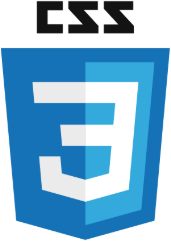
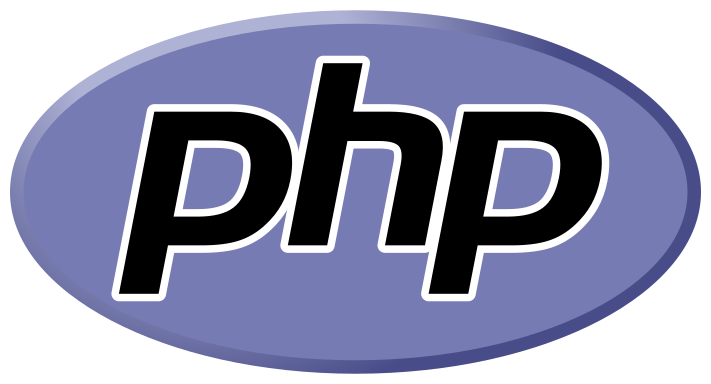

Języki programowania używane do tworzenia stron
HTML
Język programowania oparty o znaczniki, stanowiący swoisty szkielet strony internetowej,
który zapewnia oparcie pozostałym jej elementom.
Pozwala on na nakreślenie podstawowego wyglądu i funkcji strony,
a także osadzenie w dokumencie plików np. multimediów, czy też elementów baz danych.
Za najważniejszych twórców języka HTML uznaje się Brytyjskiego fizyka i programistę Tima Bernersa-Lee
oraz jego amerykańskiego kolegę po fachu Dana Connoly'ego.
Pierwsze prototypy tego rewolucyjnego tworu powstały już w 1980 roku,
na potrzeby Europejskiej Organizacji Badań Jądrowych – CERN.
Język jest rozwijany od momentu powstania,
a od 2000 roku stanowi międzynarodowy standard jeśli chodzi o budowę stron internetowych.
CSS

Kaskadowe Arkusze Stylów są używane do określania formy strony internetowej.
W przeciwieństwie do mocno ograniczonego na tym polu HTML'a,
CSS przedstawia użytkownikom całą gamę różnych możliwości zmiany wyglądu strony.
Stanowi on swego rodzaju listę reguł określających w jaki sposób
poszczególne elementy mają być wyświetlane przez przeglądarkę.
Pierwsze „szkice” CSS'a powstały w 1994 roku za sprawą Norweskiego informatyka Håkona Wium Lie.
Pierwszy, kompletny projekt języka ujrzał światło dzienne w 1996.
PHP

Skryptowy język programowania używany do tworzenia, jakże by inaczej, skryptów po stronie serwera WWW.
Jako że wykonywany jest po stronie serwera, jest niewidoczny dla użytkowników.
Użycie go pozwala między innymi na dynamiczne generowanie strony,
tworzenie i modyfikowanie plików na serwerze, ograniczanie dostępu do danych czy szyfrowanie danych.
Po raz pierwszy pojawił się w 1994 roku jako stworzony przez Rasmusa Lerdorfa zestaw skryptów Perla
służący do monitorowania internautów odwiedzających jego witrynę i rozwijany jest do dzisiaj.
JavaScript

W kontraście do PHP, który używany jest po stronie serwera,
użycie JavaScripta jest widoczne bezpośrednio po stronie użytkownika.
Skrypty w tym języku zarówno mogą służyć do wywoływania konkretnych efektów na stronie internetowej,
jak na przykład tworzenie złożonych efektów wizualnych bądź sprawdzanie danych wprowadzanych w formularzach,
jak i do tworzenia pełnoprawnych aplikacji czy też prostych gier.
JS pojawił się na rynku w 1995 roku za sprawą Brendana Eicha, amerykańskiego hakera i programisty,
jako rozwinięta implementacja języka ECMAScript.